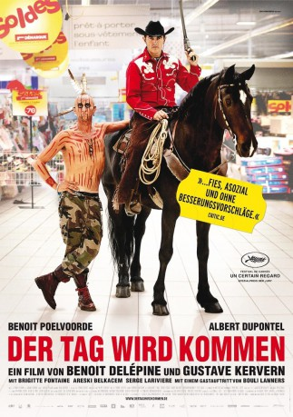

#7061 Der Tag wird kommen
 
 IMDB-Wertung: 5.9 / 10
IMDB-Wertung: 5.9 / 10  Metascore: 0
Metascore: 0 
Benoit, der sich selbst Not nennt, wie es auf seiner Stirn tätowiert ist, um seine Punkeinstellung zu demonstrieren, lebt von der Hand in den Mund. Er und sein erfolgloser Spießer-Bruder Jean-Pierre, beide schon Mitte 40, haben nur eins gemeinsam, ihre Unselbständigkeit. Zum Essen treffen sie sich immer noch im elterlichen Kartoffelrestaurant. Als Jean-Pierre von seiner Frau verlassen wird und seinen Job verliert, lässt er sich von seinem Bruder zum gesellschaftlichen Außenseiter wandeln inklusive Tattoo "Dead" auf der Stirn.
Jahr: 2012
Dauer: 91 Minuten
FSK: 12
Land: Frankreich Studio: Alamode FilmTonspuren: DD5.1 - ,
Untertitel:
Auflösung: 1080p (1920x824) Größe: 6912 MB
Genre: Komödie
Regisseur: Benoît Delépine, Gustave Kervern
Drehbuch: GMT Productions
Soundtrack:
Darsteller:
 Benoît Poelvoorde als Benoît Bonzini, alias NOT
Benoît Poelvoorde als Benoît Bonzini, alias NOT Albert Dupontel als Jean-Pierre Bonzini
Albert Dupontel als Jean-Pierre Bonzini Bouli Lanners als Le vigile qui 'fait'
Bouli Lanners als Le vigile qui 'fait' Serge Larivière als Le directeur du 'Grand Litier'
Serge Larivière als Le directeur du 'Grand Litier' Yolande Moreau als La mère de la punkette
Yolande Moreau als La mère de la punkette Gérard Depardieu als Juvénal, l'homme qui lit l'avenir dans le verre de saké
Gérard Depardieu als Juvénal, l'homme qui lit l'avenir dans le verre de saké- Brigitte Fontaine als Marie-Annick Bonzini, la mère
- Areski Belkacem als René Bonzini, le père
- Stéphanie Pillonca als L'ex-femme de Jean-Pierre
- Miss Ming als La jeune femme aux cigarettes
- Chloé Mons als La punkette
- Vincent Tavier als Le client Grand Litier
- Jacqueline Emptoz Lacôte als La cliente économe
- Joseph Dahan als Le serveur La Pataterie
- Théo Raino als Le client permanent La Pataterie
- Liao Lei Zhang als Le patron resto chinois
- Nicole Marine als Dame aux yaourts 1
- Marie-France Arramon als Dame aux yaourts 2
- Denis Barthe als Le barman
- Pierre Ghenassia als L'huissier
- Ramata Diallo als Serveuse fast-food
- Dodo Avrel als Le gars du Pizza Paï
- David Salles als Guichetier banque
- Brigitte Bourneuf als Cliente banque
- Guénaëlle Imbert als Chef de rayon La Grande Récré
- Marius Bertram als Portier 2e resto chinois
- Christian Charlemagne als Le paysan
- Alain Magnan als Le père de la mariée
- Marthe Caufman als La mariée
- Noël Godin als Le marié
- Raymond Defossé als Le syndicaliste
- Didier Wampas als Le chanteur des Wampas
- Nicolas Schauer als Les Wampas
- Philippe Almosnino als Les Wampas
- Jean-Michel Lejoux als Les Wampas
Datei: X:\2012(N-Z)\Tag wird kommen, Der (2012, FSK12, 1920x824).mkv seit 21.09.2017
Festplatte: HD 2012(N-Z)-2013(A-H)
 Es gibt insgesamt 138 Filme in der Gruppe '2012(N-Z)'
Es gibt insgesamt 138 Filme in der Gruppe '2012(N-Z)'